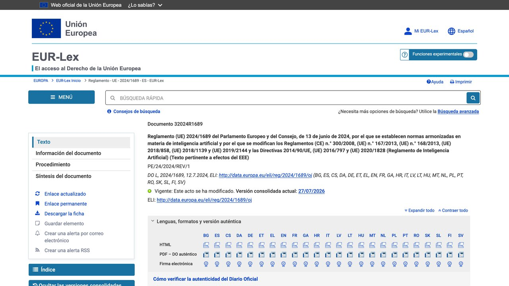

1. Cuatro niveles de riesgo, cuatro niveles de obligación
La idea central del AI Act es sencilla aunque su redacción legal no lo sea: en vez de una lista fija de tecnologías prohibidas o permitidas, clasifica cualquier sistema de IA según el riesgo que supone para las personas, y ajusta las obligaciones a esa clasificación.
2. Riesgo inaceptable: lo que queda directamente prohibido
Un número reducido de prácticas se prohíben sin excepción posible por considerarse incompatibles con los derechos fundamentales. Entre ellas: los sistemas de puntuación social por parte de gobiernos (calificar a las personas según su comportamiento para darles o quitarles acceso a servicios), las técnicas subliminales o manipulativas diseñadas para alterar el comportamiento de alguien de forma que le cause un perjuicio, y la identificación biométrica remota en tiempo real en espacios públicos con fines policiales, salvo excepciones muy tasadas (como la búsqueda de una víctima de secuestro). Estas prohibiciones fueron las primeras del reglamento en aplicarse, desde febrero de 2025.
3. Alto riesgo: donde caen las obligaciones más pesadas
Aquí se agrupan los sistemas que, sin estar prohibidos, pueden afectar de forma significativa a la vida de una persona: selección y evaluación de personal, calificación crediticia, sistemas usados en educación para decidir acceso o evaluación, dispositivos médicos con IA, y ciertos usos en el ámbito judicial y policial, entre otros ejemplos que recoge la norma. Quien desarrolla o despliega uno de estos sistemas debe cumplir obligaciones como evaluación de riesgos previa, supervisión humana efectiva, documentación técnica detallada y registro en una base de datos pública de la UE — no basta con que el sistema "funcione bien", tiene que poder demostrarse que funciona bien de forma auditable. Conviene no confundir ese «ámbito judicial» con el uso cotidiano: un asistente que te resume o revisa un contrato para que lo leas tú no entra ahí, y tiene sus propios límites, que son otros.
Quien desarrolla el sistema de IA o lo comercializa bajo su propio nombre. Asume la mayor parte de las obligaciones: documentación técnica, gestión de calidad, evaluación de conformidad antes de sacarlo al mercado.
Quien usa el sistema de alto riesgo dentro de su propia organización — por ejemplo, la empresa que compra un software de selección de personal y lo aplica a sus candidatos. Tiene obligaciones propias: supervisión humana real, informar a las personas afectadas, y vigilar que el sistema se use como estaba previsto.
Esta distinción importa porque las obligaciones no recaen solo en quien construyó la tecnología — una empresa que simplemente compra e implanta un sistema de alto riesgo también adquiere responsabilidades propias, no delegables por completo en el proveedor del software.
«El AI Act no regula "la inteligencia artificial" — regula lo que un sistema concreto puede hacerle a una persona concreta. Esa es la diferencia entre una ley pensada para 2020 y una pensada para durar.
— Redacción El Telar
4. Riesgo limitado y mínimo: la mayoría de lo que usas a diario
Un chatbot como ChatGPT, Claude o Gemini entra normalmente en "riesgo limitado": la obligación principal es de transparencia — el sistema debe dejar claro que estás hablando con una IA, y el contenido generado artificialmente (como un vídeo hiperrealista falso, un "deepfake") debe etiquetarse como tal. La mayoría del resto de usos cotidianos de IA — corrección ortográfica, recomendaciones de contenido, filtros de spam — caen en "riesgo mínimo", sin obligaciones específicas del AI Act más allá de la normativa general que ya existía (protección de datos, defensa del consumidor). Si el chatbot es tuyo y atiende a clientes, esa obligación de transparencia se aplica desde el 2 de agosto de 2026 y tiene consecuencias prácticas de diseño: las repasamos en la guía sobre montar un bot de atención al cliente que no invente respuestas.
Una tienda online con un asistente de atención al cliente debe indicar, de forma clara desde el primer mensaje, que quien responde es una IA y no una persona del equipo.
Un vídeo, imagen o audio generado por IA que parece real (un "deepfake") debe llevar una indicación de que es contenido generado o manipulado artificialmente, perceptible para quien lo reciba. En audio eso no puede ser una etiqueta visual, y es una de las obligaciones que más gente pasa por alto: lo desarrollamos en la guía de clonar voz y generar audio con IA.
5. Un caso aparte: los modelos de propósito general más potentes
Los modelos de IA de propósito general (los que entrenan empresas como OpenAI, Anthropic o Google para servir de base a múltiples aplicaciones) tienen su propio capítulo en el AI Act, con obligaciones de documentación técnica y transparencia sobre los datos de entrenamiento para todos ellos. Los modelos que superan un umbral de cómputo de entrenamiento considerado de "riesgo sistémico" — por encima de 10 elevado a 25 operaciones de coma flotante, una cifra que solo alcanzan los modelos más grandes del mercado — asumen obligaciones adicionales: evaluación de riesgos adversariales, reporte de incidentes graves de seguridad, y medidas de ciberseguridad reforzadas. Estas obligaciones específicas de los modelos de propósito general empezaron a aplicarse en agosto de 2025.
6. Lo que de verdad cambia para un autónomo o una pyme
La mayoría de pequeños negocios que usan IA lo hacen para tareas de riesgo mínimo o limitado — redactar, generar contenido, automatizar respuestas — donde el AI Act apenas añade carga. La situación cambia si tu negocio despliega un sistema que decide sobre personas de forma automatizada: un chatbot de atención al cliente que además filtra solicitudes de empleo, un scoring interno para aprobar o rechazar clientes, o cualquier herramienta que tome decisiones con impacto real sin supervisión humana efectiva. En esos casos concretos, aunque el negocio sea pequeño, las obligaciones de alto riesgo pueden aplicar igualmente — el tamaño de la empresa no exime de la norma, aunque sí existen medidas de apoyo específicas para pymes previstas en el reglamento, como acceso prioritario a entornos de prueba controlados ("sandboxes regulatorios").
- ¿El sistema que usas solo genera texto o imágenes de apoyo? Probablemente riesgo mínimo o limitado, sin carga adicional real.
- ¿El sistema decide automáticamente sobre una persona (contratar, dar crédito, evaluar) sin revisión humana efectiva? Revisa si entra en la categoría de alto riesgo.
- ¿Es un chatbot de cara al público? Recuerda que debe quedar claro que la persona está hablando con una IA, no con un humano.

7. El calendario de entrada en vigor, por fases
| Fecha | Qué entra en vigor |
|---|---|
| 2 febrero 2025 | Prohibiciones de prácticas de riesgo inaceptable |
| 2 febrero 2025 | También la obligación de alfabetización en IA (artículo 4) |
| 2 agosto 2025 | Gobernanza y obligaciones para modelos de propósito general |
| 2 agosto 2026 | El reglamento pasa a ser aplicable en general, con excepciones: supervisión por la Oficina de IA y las autoridades nacionales, y normas de transparencia (avisar de que hablas con una IA, etiquetar contenido sintético) |
| 2 diciembre 2026 | Nueva prohibición añadida en 2026: sistemas de IA que generan imágenes íntimas sin consentimiento o material de abuso sexual infantil («nudificación») |
| 2 diciembre 2027 | Alto riesgo del Anexo III (biometría, infraestructuras críticas, educación, empleo, migración y fronteras). Antes era agosto de 2026 |
| 2 agosto 2028 | Alto riesgo de IA integrada en productos regulados del Anexo I (ascensores, juguetes, dispositivos médicos…). Antes era agosto de 2027 |
Qué ha cambiado en 2026: el «ómnibus digital» retrasa el alto riesgo
La versión original del reglamento fijaba para agosto de 2026 la aplicación de las reglas de alto riesgo. Ya no es así. El Reglamento (UE) 2026/1744, el llamado «ómnibus digital» sobre IA, modifica el AI Act: fue adoptado el 8 de julio de 2026, se publicó en el Diario Oficial de la UE el 24 de julio y está en vigor desde el 27 de julio de 2026.
Según el calendario que publica la Comisión Europea (actualizado en agosto de 2026), el ómnibus hace tres cosas que te interesan: aplaza el alto riesgo del Anexo III hasta el 2 de diciembre de 2027 y el de los productos regulados del Anexo I hasta el 2 de agosto de 2028; añade una prohibición nueva, la de los sistemas que generan imágenes íntimas no consentidas o material de abuso sexual infantil, que se aplica desde diciembre de 2026; y refuerza a la Oficina Europea de IA como supervisora.
Las reglas de alto riesgo (selección de personal, crédito, educación, biometría…). Si usabas «agosto de 2026» como fecha límite para adaptarte, tienes más margen, pero no te sirve de excusa para no hacer inventario ahora.
Las prohibiciones (desde febrero de 2025), la alfabetización en IA, las obligaciones de los modelos de propósito general (desde agosto de 2025) y las normas de transparencia, que arrancan en agosto de 2026.
Conviene no mezclar los plazos: una empresa que usa un chatbot de cara al público ya debe avisar de que es una IA, aunque el alto riesgo se haya retrasado. Y hay una consecuencia de calle que ya se nota: algunas funciones de IA de las grandes tecnológicas llegan tarde o no llegan a la UE. Dos ejemplos recientes en nuestra sección de noticias son Apple HomeView, que no se venderá en la UE por ahora y los agentes «dots» de OpenAI, que no están disponibles para suscriptores Pro individuales en el Espacio Económico Europeo. Las empresas no siempre explican el motivo exacto, así que no lo atribuyas sin más al AI Act.
Fuentes oficiales para comprobarlo: el texto del Reglamento (UE) 2026/1744 en EUR-Lex y el calendario de la Comisión Europea. Otros detalles del ómnibus (por ejemplo, ajustes en el artículo 4 o plazos de gracia para marcar contenido sintético) varían según los resúmenes que circulan: consulta el texto consolidado antes de apoyarte en ellos.
8. Las multas, y por qué se calculan como porcentaje
Las infracciones más graves — usar una práctica de riesgo inaceptable directamente prohibida — pueden sancionarse hasta con 35 millones de euros o el 7% de la facturación global anual de la empresa, lo que resulte mayor. El resto de incumplimientos (obligaciones de alto riesgo, transparencia) tienen techos menores, pero calculados con la misma lógica: un porcentaje de la facturación mundial, no una cifra fija. Esa es la razón por la que estas multas escuecen mucho más a una gran tecnológica que a una pyme — el importe crece con el tamaño de quien incumple.
9. La obligación que casi nadie conoce: formar a quien usa la IA
El artículo 4 del reglamento obliga a las empresas que desarrollan o usan sistemas de IA a tomar medidas para que su personal tenga un nivel suficiente de "alfabetización en IA". Se aplica desde febrero de 2025 y no depende del nivel de riesgo: afecta también a la pyme que solo usa un chatbot para redactar correos.
El texto no exige un título ni un curso concreto. Pide algo proporcionado a lo que hace cada persona con la IA: que sepa para qué sirve la herramienta, qué límites tiene, qué datos no debe introducir y cuándo tiene que revisar el resultado. En la práctica, una formación breve y documentada, más unas normas internas por escrito, es la forma más sencilla de poder demostrarlo.
10. Quién vigila en España y dónde informarse
Cada Estado miembro tiene que designar autoridades que supervisen el cumplimiento. En España se creó para ello la Agencia Española de Supervisión de la Inteligencia Artificial (AESIA), con sede en A Coruña, que convive con otras autoridades según el sector: la protección de datos sigue siendo cosa de la AEPD, por ejemplo, y los productos regulados tienen sus propios organismos.
Para dudas concretas, las fuentes fiables son el texto oficial del Reglamento (UE) 2024/1689 en EUR-Lex, la Oficina Europea de IA de la Comisión, que publica guías y códigos de buenas prácticas, y las publicaciones de la propia AESIA. Desconfía de cualquier servicio que te venda un "certificado AI Act" obligatorio para usar ChatGPT: no existe.
11. Lista práctica para una pyme o un autónomo
- Haz inventario. Apunta qué herramientas de IA se usan en tu negocio, quién las usa y para qué. Incluye las gratuitas que cada empleado usa por su cuenta.
- Clasifica cada uso. Redactar textos o resumir documentos suele ser riesgo mínimo. Filtrar candidatos, evaluar a trabajadores o decidir sobre créditos entra en alto riesgo y merece asesoramiento.
- Avisa cuando toque. Si un cliente habla con un chatbot, debe saber que no es una persona. Si publicas imágenes, audio o vídeo realistas generados con IA, indícalo.
- Forma y deja constancia. Unas normas internas de una página y una sesión breve cubren la obligación de alfabetización para la mayoría de pymes.
- Revisa a tus proveedores. Pregunta qué hacen con tus datos y si cumplen el reglamento. Las obligaciones más pesadas recaen en ellos, pero tú eliges con quién trabajas.
Esta guía es informativa y no sustituye al asesoramiento jurídico. Si tu uso de la IA puede caer en alto riesgo, consulta con un profesional antes de ponerlo en marcha.
12. El AI Act no sustituye al RGPD: se suman
Un error frecuente es pensar que, si cumples el reglamento de IA, ya está todo hecho. Cuando una herramienta de IA trata datos personales, sigue aplicándose el Reglamento General de Protección de Datos: necesitas una base legal para ese tratamiento, informar a las personas afectadas y, si hay decisiones automatizadas con efectos importantes sobre alguien, respetar su derecho a que intervenga una persona.
Ejemplo de riesgo mínimo con problema de datos
Pegar las nóminas de tu plantilla en un chat gratuito para que te haga un resumen. Para el AI Act es un uso de bajo riesgo; para el RGPD, un tratamiento de datos que probablemente no puedes justificar.
Ejemplo de alto riesgo
Un sistema que puntúa automáticamente a los candidatos de una oferta. Tiene obligaciones en los dos reglamentos a la vez.